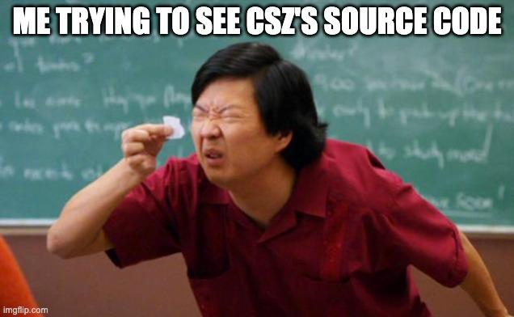
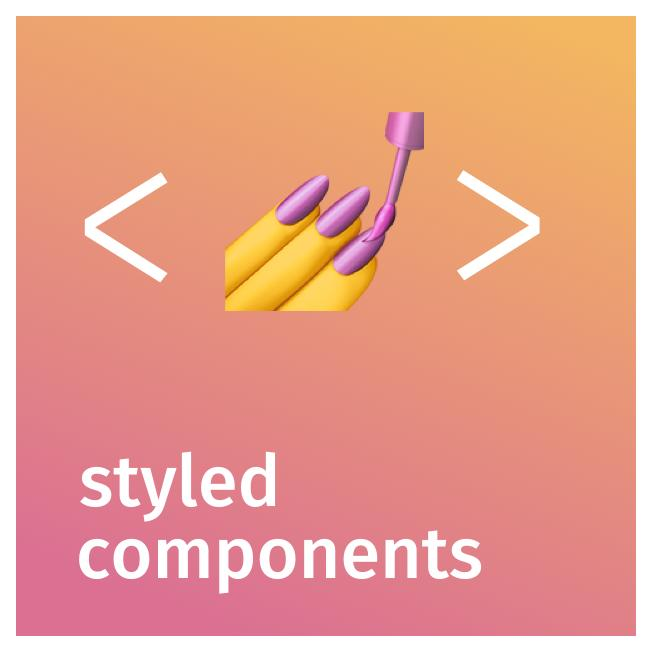
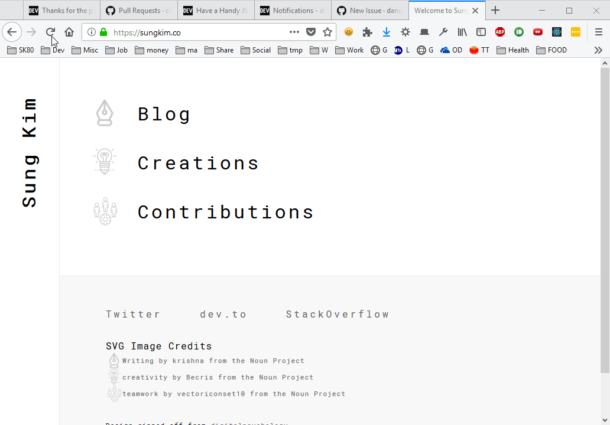

A Super Tiny Framework-Agnostic
CSS-in-JS
Rajasegar Chandran
About me
Front-end @ Freshworks Inc
CSS-in-JS
React: CSS in your JS by Christopher Chedeau from Nation Conferences on Vimeo.
CSS: Problems at Scale
- Global Namespace
- Dependencies
- Dead Code Elimination
- Minification
- Sharing Constants
- Non-deterministic resolution
- Isolation
- Styled Components
- Emotion
- Glamorous
- Fela
- aphrodite
- glamor
- styletron
- JSS
- linaria
- react-jss
CSS Evolution: From CSS, SASS, BEM, CSS Modules to Styled Components
CSS-in-JS
“ the overall ecosystem is still very fragmented and in constant movement. So it remains to be seen what place CSS-in-JS will occupy in the overall ecosystem in the long run.”
CSS 2019- Compilation
- Build
- Static
- Plugins
- Syntax
- Loaders
Why?
- Framework Agnostic CSS-in-JS
- Load styles dynamically from .css files withouth FOUC
- Efficient Caching of styles
- Write CSS in SASS like Way
- No Bundling / Compilation
What?
Runtime CSS Modules with SASS like pre-processing
Super Tiny
Just 49 lines of JavaScript
Source code
import stylis from './stylis.js';
const cache = {};
const hash = () => Math.random() .toString(36) .replace('0.', '');
const sheet = document.createElement('style');
document.head.appendChild(sheet);
const none = hash => `.${hash}{display:none}`;
const hide = hash => (sheet.innerHTML = none(hash) + sheet.innerHTML);
const show =
hash => (sheet.innerHTML = sheet.innerHTML.replace(none(hash), ''));
const isExternalStyleSheet = key => /^(\/|https?:\/\/)/.test(key.trim());
const process = key => hash => rules => {
sheet.innerHTML += (cache[key] = {
hash,
rules: stylis()(`.${hash}`, rules)
}).rules;
if (isExternalStyleSheet(key)) show(hash);
};
export default (strings, ...values) => {
const key = strings[0].startsWith('/')
? strings[0]
: strings.reduce(
(acc, string, i) =>
(acc += string + (values[i] == null ? '' : values[i])),
''
);
if (cache[key]) return cache[key].hash;
const className = 'csz-' + hash();
const append = process(key)(className);
if (isExternalStyleSheet(key)) {
hide(className);
fetch(key)
.then(res => res.text())
.then(append);
} else append(key);
return className;
};
BundlePhobia
cszFramework-Agnostic
React, Vue, Ember, Preact, Svelte, ...
Run-time only class name generation &
Ruleset Isolation
Loading in stylesheets (.css) dynamically
during runtime in the browser (not compile time)
SASS like preprocessing
- Nested Selectors
- Global style injection
- Vendor prefixing
I am a center aligned text.
↓
stylis
Sultan Tarimo
github.com/thysultan/stylis.js
Stylis
Features:
- Nesting a { &:hover {} }
- Selector namespacing
- Vendor prefixing (flex-box, etc...)
- Minification
- ESM module compatible
- Tree-shaking-able
No build tools required
Just works in the browser on the fly...
Using csz
Importing csz (Node)
import css from 'csz';
Importing csz (Browser)
import css from 'https://unpkg.com/csz';
unpkg
unpkg.com/:package@:version/:file
unpkg.com/react@16.7.0/umd/react.production.min.js

🛫
Inline usage
// static
// generate class name for ruleset
const inlined = css`background: blue;`;
Using external stylesheets
// dynamic (from stylesheet)
// generate class name for file contents
const relative = css`/index.css`;
// dynamic (from url)
// generate class name for file contents
const absolute = css`https://example.com/index.css`;
Hello world example
Dynamically generated class names
.csz-pr8icladqd9 {
font-size:1.5em;
text-align:center;
color:palevioletred;
}
.csz-1vhdvy1k9f8 {
padding:4em;
background:papayawhip;
}
Hello world example - variation 2
Adapting to props
Pseudo selectors
Animations
Theming - component definition
Theming - component usage
How?
1. Import stylis
import stylis from './stylis.js';
2. Creating the hash
const hash = () =>
Math.random()
.toString(36)
.replace('0.', '');
0.9443615549023372
↓
"0.uzmb2hdq59f"
↓
"uzmb2hdq59f"
Base 36
hexatridecimal
3. Adding Internal Stylesheet
const sheet = document.createElement('style');
document.head.appendChild(sheet);
4. Temporary ruleset to prevent FOUC
const none = hash => `.${hash}{display:none}`;
const hide = hash => (sheet.innerHTML = none(hash) + sheet.innerHTML);
const show = hash => (sheet.innerHTML = sheet.innerHTML.replace(none(hash), ''));
Flash of Unstyled Content
5. Caching
- Inline Styles
- External Stylesheets (both local and remote)
Cache Key
const key = strings[0].startsWith('/')
? strings[0]
: strings.reduce(
(acc, string, i) =>
(acc += string + (values[i] == null ? '' : values[i])),
''
);
Cache {}
| Code | Cache Key |
|---|---|
| css`text-align:center;` | text-align:center; |
| css`/index.css` | /index.css |
| css`https://unpkg.com/tailwind.css` | https://unpkg.com/tailwind.css |
if (cache[key]) return cache[key].hash;
| Code | Cache Key |
|---|---|
| css`text-align:center;` | text-align:center; |
6. Create class name & Process
const className = 'csz-' + hash();
const append = process(key)(className);
const process = key => hash => rules => {
sheet.innerHTML += (cache[key] = {
hash,
rules: stylis()(`.${hash}`, rules)
}).rules;
if (isExternalStyleSheet(key)) show(hash);
};
External stylesheets
// Utility to check external stylesheet
const isExternalStyleSheet = key => /^(\/|https?:\/\/)/.test(key.trim());
Fetch & show stylesheets
if (isExternalStyleSheet(key)) {
hide(className);
fetch(key)
.then(res => res.text())
.then(append);
} else append(key);
import stylis from './stylis.js';
const cache = {};
const hash = () => Math.random() .toString(36) .replace('0.', '');
const sheet = document.createElement('style');
document.head.appendChild(sheet);
const none = hash => `.${hash}{display:none}`;
const hide = hash => (sheet.innerHTML = none(hash) + sheet.innerHTML);
const show =
hash => (sheet.innerHTML = sheet.innerHTML.replace(none(hash), ''));
const isExternalStyleSheet = key => /^(\/|https?:\/\/)/.test(key.trim());
const process = key => hash => rules => {
sheet.innerHTML += (cache[key] = {
hash,
rules: stylis()(`.${hash}`, rules)
}).rules;
if (isExternalStyleSheet(key)) show(hash);
};
export default (strings, ...values) => {
const key = strings[0].startsWith('/')
? strings[0]
: strings.reduce(
(acc, string, i) =>
(acc += string + (values[i] == null ? '' : values[i])),
''
);
if (cache[key]) return cache[key].hash;
const className = 'csz-' + hash();
const append = process(key)(className);
if (isExternalStyleSheet(key)) {
hide(className);
fetch(key)
.then(res => res.text())
.then(append);
} else append(key);
return className;
};
Sample Projects:
- https://github.com/rajasegar/csz (test folder for examples)
- https://github.com/rajasegar/react-csz
- https://github.com/rajasegar/vue-csz
- https://github.com/rajasegar/svelte-csz
- https://github.com/rajasegar/ember-csz
- https://github.com/rajasegar/preact-csz
- https://github.com/rajasegar/react-csz-buttons
References:
Slides